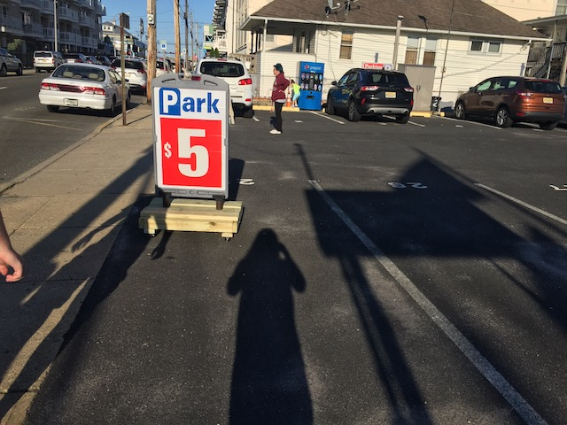
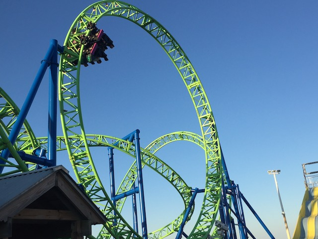
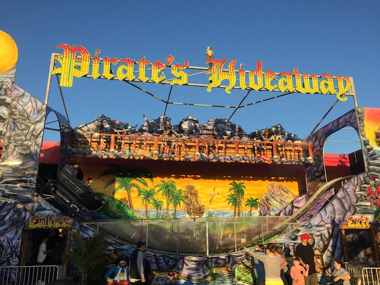
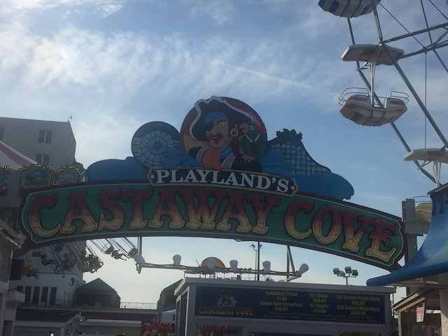
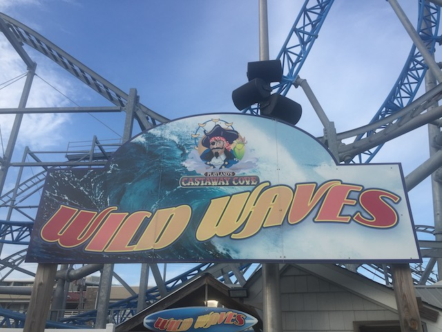

| |
East Coast Trip 2021
Lake Compounce Six Flags New England New York City American Dream Coney Island Six Flags Great Adventure
Casino Pier & Playland's Castaway Cove Dorney Park Cedar Point Kings Island Columbus Zoo & Waldameer Kennywood
Idlewild & Lakemont Park Hersheypark Knoebels
All right. That was a fun half-day at Six Flags Great Adventure. Time to move onto the next park for the evening.

Well, wherever we are, the parking here is a steal. OK. It's offically sad that I'm excited about $5 parking.
Hey guys! I know we had other plans, but I just found this random theme park. Anyone wanna just stop on by?
 Yep. Tonight's Jersey Shore park is Casino Pier. Small little place, but we stopped here for one primary reason.
Yep. Tonight's Jersey Shore park is Casino Pier. Small little place, but we stopped here for one primary reason.
OK. Time for an early dinner (Lupper) since we didn't really eat anything since breakfast.
 Uh...WHAT THE F*CK!!? Chocolate Covered Doritos!? Sounds bad, but.....kind of intriguing. I'd give them a try out of morbid curiosity (But I'm not paying for something that's most likely really bad). But Chocolate Covered Slim Jims!? NO!!! JUST NO!!! Slim Jims are one of the few unhealthy junk foods that tastes terrible. So naturally, stay away since they're literally good for nothing. Seriously, Slim Jims already taste like a combination of rubber and the lowest grade meat. Dip that in chocolate!? What moron thought that that would be a good idea!?
Uh...WHAT THE F*CK!!? Chocolate Covered Doritos!? Sounds bad, but.....kind of intriguing. I'd give them a try out of morbid curiosity (But I'm not paying for something that's most likely really bad). But Chocolate Covered Slim Jims!? NO!!! JUST NO!!! Slim Jims are one of the few unhealthy junk foods that tastes terrible. So naturally, stay away since they're literally good for nothing. Seriously, Slim Jims already taste like a combination of rubber and the lowest grade meat. Dip that in chocolate!? What moron thought that that would be a good idea!?
OK. We didn't do the Chocolate Covered Doritos or anything crazy like that. Just your standard seaside park food. Good, but nothing special.
Hey giant dude with the giant American flag. Have you seen my pet giraffe around?
 This is the real reason we made Casino Pier a priority on this trip.
This is the real reason we made Casino Pier a priority on this trip.
 So this is the coaster that replaced Star Jet, which gained national recognition as being the roller coaster destroyed by Hurricane Sandy and one of the most iconic photos of Hurricane damage (This and Six Flags New Orleans being destroyed by Hurricane Katrina are the only two examples of climate change hurting the theme park world. Though I honestly expect that to change this decade). And yeah, Star Jet looked fun, but....a Eurofighter is clearly better (this was built over the beach and not the ocean for obvious reasons).
So this is the coaster that replaced Star Jet, which gained national recognition as being the roller coaster destroyed by Hurricane Sandy and one of the most iconic photos of Hurricane damage (This and Six Flags New Orleans being destroyed by Hurricane Katrina are the only two examples of climate change hurting the theme park world. Though I honestly expect that to change this decade). And yeah, Star Jet looked fun, but....a Eurofighter is clearly better (this was built over the beach and not the ocean for obvious reasons).

So this is the basic Eurofighter model, only without the helix at the end. It's basically Untamed, except just the first drop and inversions into the brake run. However, this ride is so much better for a handful of reasons.
First off, the setting on the beach. That just really helps the ride. Second of all, this only has lap bars. And my god. That REALLY makes a difference on this ride. It's just so much more fun.
 OK. There's more to Casino Pier than just their Eurofighter. Let's check out what else this park has to offer.
OK. There's more to Casino Pier than just their Eurofighter. Let's check out what else this park has to offer.
No Disney. This isn't a rip-off of The Little Mermaid and Finding Nemo. It's just a mermaid with a clownfish. Total coincidence. =P
 Ooh. Now this is my kind of flat ride.
Ooh. Now this is my kind of flat ride.
I think A&W might possibly be the only fast food burger chain that I still have not tried. Too bad there's none in So-Cal (at least the populated parts. There's one in the middle of nowhere, Inland CA beyond Riverside. But I'm not going out of my way just for that alone) and we never seem to be by any on the trips where we stop. Gonna have to come here sometime.

All right. Time for another credit at this park. And....this is a really strange one.
 Looking at it, you'd think that this is a dark ride. One of those "credits" that desperate people claim, but is totally a dark ride. No. This is a real legit roller coaster that counts. A really strange one that feels like it was meant to be a dark ride before someone decided to convert it into a coaster. This is really one of the more odd ones, only being beaten by Lost Coaster @ Indiana Beach for American Coasters (I really need to make that Top 10 List. Just as soon as I'm all caught up with the updates I still need to make).
Looking at it, you'd think that this is a dark ride. One of those "credits" that desperate people claim, but is totally a dark ride. No. This is a real legit roller coaster that counts. A really strange one that feels like it was meant to be a dark ride before someone decided to convert it into a coaster. This is really one of the more odd ones, only being beaten by Lost Coaster @ Indiana Beach for American Coasters (I really need to make that Top 10 List. Just as soon as I'm all caught up with the updates I still need to make).
"What the f*ck did we just experience?"
Just a quick reminder of where you are if the amazingness of Pirate's Hideaway gave you temporary amnesia.
What is this credit and why is it closed?
Ooh! This is one of those new upcoming Hamster Ball kiddy coasters. It's basically an SBF Spinner, except this one gives you the option of spinning (like usual) or flipping. I unironically want to try this ride. See how much this flips. Fingers crossed that this is becomes a kiddy coaster that is legitametly fun that I can ride without feeling like a dirty credit whore.
If not for COVID, then social distance for the sake of giving me space. Seriously, please do so.
The space shot isn't anything special. But not only is the view great, but that is a really great name and I have to compliment whoever created the ride logo. You really did a great job with that.
Famous (overrated) literature or a crappy carnival ride?
Ooh. An indoor scrambler? Getting flashbacks to the group takeover of the indoor scrambler at Funtown Splashtown USA.
 And this one was just as fun. The light package combined with blasting "99 Red Balloons" by Goldfinger just made it a really fun experience. Wish the scramblers at both my home parks were this fun to ride.
And this one was just as fun. The light package combined with blasting "99 Red Balloons" by Goldfinger just made it a really fun experience. Wish the scramblers at both my home parks were this fun to ride.
All right. Time for a Hydrus marathon (get good use out of our unlimited wristbands). It may not be a Top 10 Coaster by any means. But the view, the lap bars, it was just a ton of fun riding this repeatedly with friends. A fantastic coaster for a park like this. Very happy that Casino Pier added this ride.
Quick reminder that Casino Pier is indeed, right along the beach (Hello Atlantic Ocean BTW).
Casino Pier may not have anything super special to make it stand out. But it was just a ton of fun visiting this park. Really happy we stopped here and I'd love to come back on a future visit.
All right. Time to head back to our hotel. Wait. Are we spending the night in Atlantic City?
Now I may not be the biggest fan of Las Vegas, but it's crystal clear that Atlantic City is the cheap knockoff that wishes it was Las Vegas.
Ooh. Look at the size of the bathroom here. Honestly, this was the nicest hotel of the trip.
Second half day at Six Flags Great Adventure is now over (go check out the update), so now we're off to yet another Jersey Shore Park for the evening.

This time, we're at Playland's Castaway Cove. We had a blast at Casino Pier. Hoping that Playland's Castaway Cove is just a fun.
Does Lily create any interesting unique candies in that factory? Or is she just making more Hershey products (Trip foreshadowing) you can find at a grocery store.
Hey Lily. Found a giant M&M to sell in your factory. >=)
 OK. Time for the reason we made sure to include Playland's Castaway Cove on this trip.
OK. Time for the reason we made sure to include Playland's Castaway Cove on this trip.
So Gale Force is this weird little S&S coaster that....I don't think there's anything else like it. Which is a shame as this ride really kicked ass.
 This ride EASILY wins the award for coaster that best simulates going upsidedown without actually going upsidedown. Seriously. If you put this ride in a box and gave me no information on it other than my sense of direction while on the ride, I would've SWORN that this ride went upsidedown. It's honestly really impressive in that regard.
This ride EASILY wins the award for coaster that best simulates going upsidedown without actually going upsidedown. Seriously. If you put this ride in a box and gave me no information on it other than my sense of direction while on the ride, I would've SWORN that this ride went upsidedown. It's honestly really impressive in that regard.
 I think there was a lot of technical problems with the ride, which is a shame because I honestly feel like this would be a great coaster to clone and have at smaller parks that don't have a ton of space. It really packs a punch and doesn't take up much room (Capacity is a bitch though).
I think there was a lot of technical problems with the ride, which is a shame because I honestly feel like this would be a great coaster to clone and have at smaller parks that don't have a ton of space. It really packs a punch and doesn't take up much room (Capacity is a bitch though).
 Between this and Tranan, S&S has some really great coaster concepts that got built once and never became popular. Other parks, take note at these two parks.
Between this and Tranan, S&S has some really great coaster concepts that got built once and never became popular. Other parks, take note at these two parks.

OK. From here on out, the rest of the coasters are pretty crappy and solely for credit whoring.
It may not be as fun as the Scandia Screamer (which found a new home in Texas. Thank you random FEC. You're gonna get a courtesy visit and some money from me next time I'm in the area as a special thank you for saving a really underrated coaster), but it was still a decent family coaster that I'd be willing to reride if I came back to this park in the future.
 Wee! Mild moment of airtime!
Wee! Mild moment of airtime!
 Ugh. We're now onto the kiddy coasters.
Ugh. We're now onto the kiddy coasters.
Boo! This SBF Spinner doesn't have the hamster wheel cars! Not impressed!
Yeah. One BIG difference between here and Casino Pier are the crowds. Casino Pier felt more local and laid back. This place was PACKED and running at full speed. And that did make it lose a little bit of charm.
Hello funhouse that I've seen across countless California Fairs.
While I'm sure this ferris wheel has some nice views, the line is really long, it's expensive, and we don't have unlimited wristbands here (I so would've marathoned GaleForce if we did). So....nope. Not today.
Fun carnival ride, but certainly not worth our time today.
 It may not be anything special, but we have to check out their log flume. It's probably nothing. But we always have fun on these rides.
It may not be anything special, but we have to check out their log flume. It's probably nothing. But we always have fun on these rides.
GOD DAMN IT!!! I ACTUALLY GOT WET ON THIS RIDE!!! I know we really jammed up our boat to the max, but....these carnival log flumes usually are harmless. So to actually get wet was.....not something I was pleased about.
Not sure why we bothered with this fun house, but we had fun doing it.
Between doing Shore Shot yesterday and S&S Towers being at several other parks still remaining on this trip, we don't need to pay up to do their Double Shot.
 Time for the final credit here (other fellow credit whore censored and not shown per their request).
Time for the final credit here (other fellow credit whore censored and not shown per their request).
 I was expecting something on par with Canyon Blaster @ SFMM. But this was even smaller than I expected. Definately a one and done (pretty sure the operator was giving us a death glare and thinking WTF at us).
I was expecting something on par with Canyon Blaster @ SFMM. But this was even smaller than I expected. Definately a one and done (pretty sure the operator was giving us a death glare and thinking WTF at us).
EVERYBODY GET THE JERSEY SHORE ASSHOLES!!!
Night time ride on the Wetter than Usual Log Flume? Nah. We're not THAT stupid.
 While we didn't do it, I can say that escape rooms are a really fun experience and something worth checking out if you haven't done one before.
While we didn't do it, I can say that escape rooms are a really fun experience and something worth checking out if you haven't done one before.
OK. Time for dinner.
Hmm. Impressed with the selection here. What to get?
 While by normal food standards, this is nothing special and is honestly more prevelant in my everyday diet than standard theme park food (Spaghetti is really cheap and easy to make). But for theme parks, this is on the more unique side. And of course, it was good.
While by normal food standards, this is nothing special and is honestly more prevelant in my everyday diet than standard theme park food (Spaghetti is really cheap and easy to make). But for theme parks, this is on the more unique side. And of course, it was good.
OK. That was a fun night. Time for us to head back to our....what's this?
Another theme park is a stones throw away from our hotel! Bonus credit whoring!
Oh boy. Time for yet another Spinning Mouse.
What!? It's closed!!? LAME!!! =(
Now this ride closed in 2021, shortly after we stopped by. Not sure if this coaster was already toast and SBNO before its demolition, or if we were just unlucky. Doesn't matter as it's being replaced with yet ANOTHER Spinning Mouse (they're just updating their Reverchon Spinning Mouse and replacing it with a Premier one. Same basic ride).
Now I could've gptten their kiddy credit. However, I was kind of grumpy that night and not in the mood to shell out $15 for a kiddy credit. But don't worry. I'll be back here someday (after hearing about their new Sky Rocket II coming in 2025, I'm most likely stopping by next time I'm in New Jersey). And when I do, I'll snag this credit then.
Well, Steel Pier was a bust. There's gotta be more fun stuff to do in Atlantic City.
Come gamble here Kevin. Don't you wanna win the money you spent on this trip back (No gambling was done. I would've just lost money)?
Dorney Park
Home
|